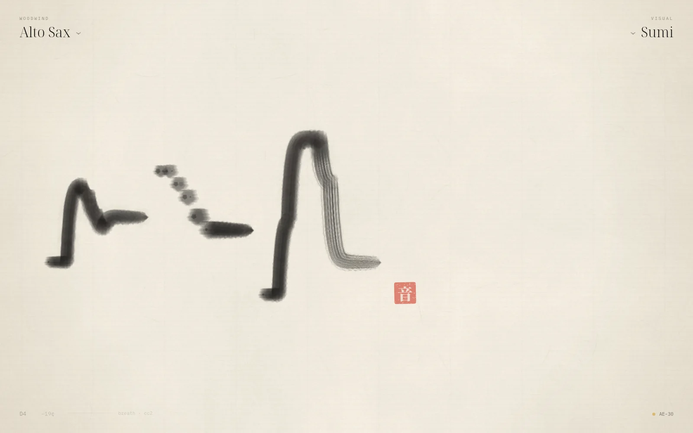
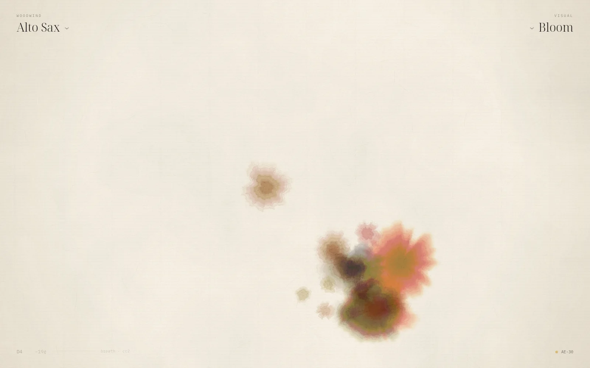
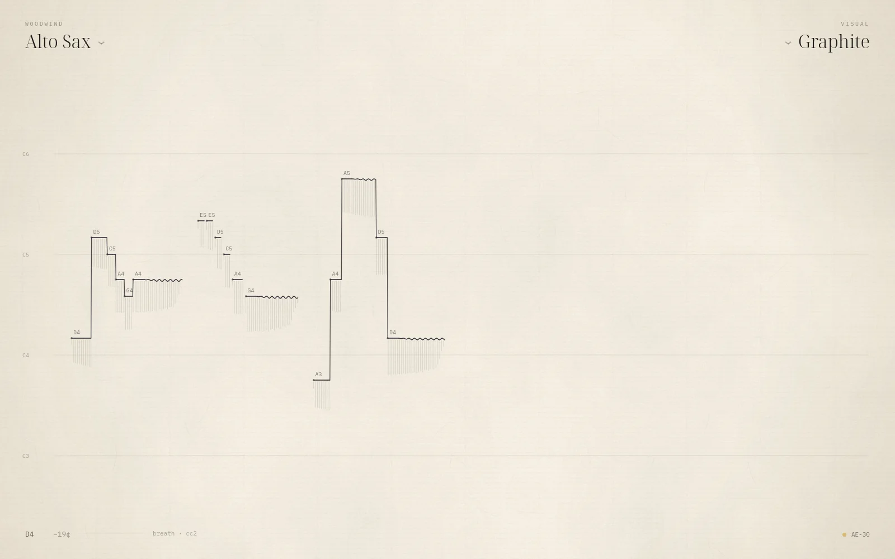
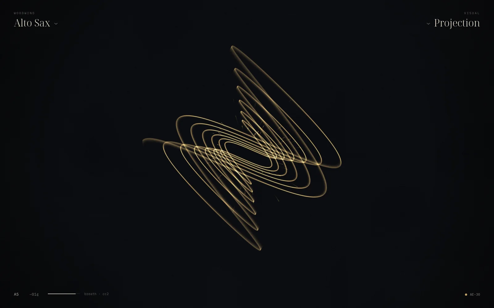

I
An oboe that projects light, played with the breath.
The Holophonor is the instrument of a far future: part wind, part hologram. Ours is real. Plug in a wind controller and the window becomes a sheet of raw xuan paper. Breathe, and the instrument sounds while a brush writes the melody across the sheet.
There is no mixer, no rack, no setup screen. The instrument is top left, the way the music is drawn is top right, and everything else is the paper.
Native C++ and Qt Quick · PipeWire at 2.7 ms · ALSA hot-plug · follows your Omarchy theme
II
Plug in. Breathe.
An EWI or Aerophone is found the moment the kernel sees it. Every sensor means what it means on a real horn.
- BreathCC2 · CC11 · CC7 · AT
- Loudness and timbre together, continuously from pp to ff. Blow harder and the tone brightens, as it does on the real instrument.
- Tonguenote on · velocity
- A new attack, and a real one: the recorded soft, normal or accented attack of that very note, chosen by how hard you tongued.
- Sluron before off
- The pitch moves at once, with only the brief settle of a bore finding its new note. Instruments slur; they don't slide.
- Bitepitch bend
- Your vibrato, and only yours. Pitch, loudness and tone move together, the way a jaw vibrato does. Nothing robotic is added.
- Bend± 2 semitones
- The thumb, the plates, the joystick: bends where you put them.
- GlideCC65 · CC5
- Portamento only when you ask for it.
III
Real instruments, measured.
The winds are not guessed at. Each is a profile measured from real players: every note at pp, mf and ff (929 tones in all), from the University of Iowa Musical Instrument Samples.
A tongued note begins with the recorded attack, then hands over, in phase, to its harmonics. From there your breath moves continuously between the three recorded dynamics. Pitch is exact.
The same thirteen-second phrase, as an Aerophone sends it, through each voice ↓
Thirty voices Soprano, Alto, Tenor and Baritone Sax · Clarinet · Flute · Oboe · Bassoon · Trumpet · French Horn · Trombone · Violin · Cello · Strings · Choir · Whistle · Shakuhachi · Pan Flute · Ocarina · Analog Lead · Glass Pad · Sub Bass · Aether · Harp · Nylon Guitar · Koto · Electric Piano · Glass Bells · Marimba · and the Holophonor itself
IV
Four ways to see the music.




V
The Holophonor's light.
Two pendulums swing at the ratio of the interval you play, losing energy as they go. Consonance draws a calm figure; dissonance, a dense one.
Interval perfect fifth 3 : 2
VI
Install on Arch.
Holophonor is built the way Omarchy's own apps are: one C++ binary with Qt Quick, installed as a package so it appears in the launcher. Everything it needs ships with Omarchy.
On plain Arch, first:sudo pacman -S --needed base-devel qt6-base \
qt6-declarative qt6-wayland libpipewire alsa-lib
On an Aerophone, send Bite as pitch bend in the scene's MIDI settings, and your bite becomes the vibrato.
$ git clone https://github.com/Mhsbrian/Holophonor.git
$ cd Holophonor
$ bin/install # build, package, install
# then Super + Space → Holophonor
# or try it first, without installing:
$ bin/build && build/holophonor --demoVII
Keyboard first.
- / Ctrl K
- search instruments
- [ ]
- previous · next instrument
- 1 – 4
- Sumi · Bloom · Graphite · Projection
- Space
- a fresh sheet
- Ctrl S
- save the painting
- Ctrl D
- play the demo performance
- A W S … K
- play from the computer keys
- Z X
- octave down · up
- Esc
- silence everything
- F11
- full screen
- ?
- every shortcut
- Ctrl Q
- quit
VIII
Under the paper.
wind controller ─USB─▶ ALSA sequencer ─▶ MIDI thread ─┐ lock-free queues
├──▶ synth · PipeWire realtime thread
computer keys · demo ─────────────────▶ UI thread ───┘ │ 128 frames · 48 kHz
├──▶ PipeWire ──▶ speakers
▼
snapshot · pitch · breath · note
│ 60 Hz
▼
ink painter ──▶ the sheet you see- Voices measured spectra with recorded attacks · modelled winds · Karplus–Strong strings · FM keys
- Latency 128-frame PipeWire stream; nothing on the audio thread locks or allocates
- Tests 128 cases: tuning to 12 cents, slurs without glides, hot-plug on the real sequencer, painting to the pixel
- Theme follows Omarchy live: the accent lights the projection, the theme's colours become the pigments